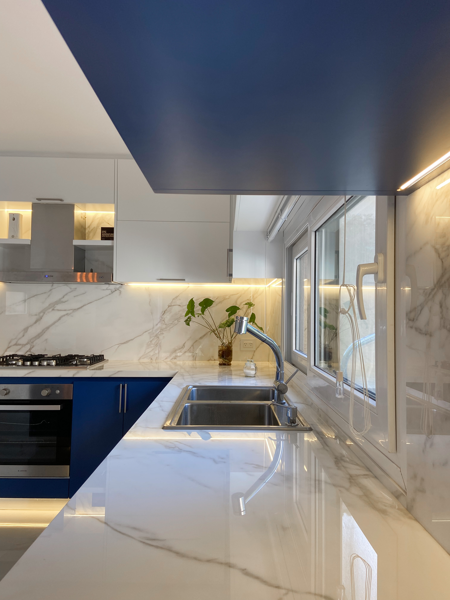
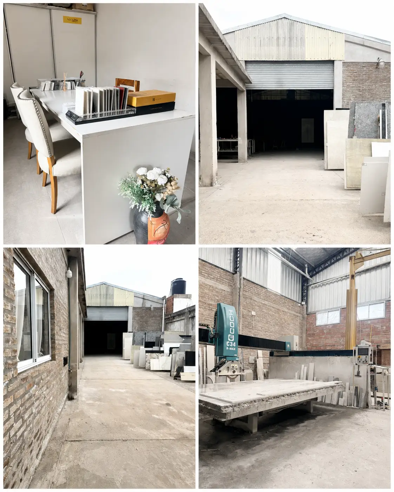

TALLER DE PIEDRA — BUENOS AIRES
MÁRMOL QUE DEFINE ESPACIOS.
COCINAS · ESCALERAS · BAÑOS · REVESTIMIENTOS
I— MATERIA · DESTACADOS
NUESTRA MATERIA PRIMA.
Piedras naturales y superficies de ingeniería, elegidas bloque por bloque. Tocá un material para consultar disponibilidad y precio.
II— PROCESO
DEL BLOQUE AL ESPACIO.
 01MESA EN NEOLITH CALACATTA
01MESA EN NEOLITH CALACATTA
 02ESCALERA EN NEOLITH IRON GREY
02ESCALERA EN NEOLITH IRON GREY

03MESADA EN NEOLITH CALACATTATRANSFORMAMOS MATERIA EN ARQUITECTURA.
III— CATÁLOGO
TODOS LOS PRODUCTOS.
Explorá el catálogo completo por categoría. Tocá cualquier material para verlo en detalle y consultar disponibilidad, formatos y precio.
IV— NOSOTROS
MANOS, PIEDRA Y TIEMPO.

Somos una marmolería familiar con una historia que atraviesa generaciones. Nuestro oficio comenzó con nuestro abuelo, continuó de la mano de nuestro padre y hoy somos nosotros quienes seguimos manteniendo viva esa tradición.
Hace 9 años iniciamos nuestro propio camino, combinando todo el conocimiento y la experiencia heredados con una mirada actual, cuidando cada detalle y manteniendo siempre el compromiso con la calidad.
Para nosotros, trabajar el mármol no es solo un oficio: es un legado familiar que continúa creciendo generación tras generación.
HABLAR CON EL TALLER
IV— NOSOTROS · LOS NÚMEROS
EXPERIENCIA QUE PERDURA.
SEGUINOS
V— PROYECTOS
NUESTROS PROPIOS PROYECTOS.
Obra real, materialidad real. Cada proyecto que salió de nuestro taller tiene historia — tocá cualquier imagen para consultar materiales, medidas y precio.

VI— CONTACTO
¿TENÉS UN PROYECTO EN MENTE?
Contanos qué necesitás y te ayudamos a encontrar el material ideal. Respondemos el mismo día.
VII— UBICACIÓN · TALLER
NUESTRO TALLER.
Vení a conocer nuestras placas en persona, apreciar las vetas y texturas de cada piedra y coordinar tu proyecto directo en el taller.
MARMOLERÍA BENJAMÍN
Saraza 4297, B1761FFM Pontevedra
Provincia de Buenos Aires, Argentina
Lunes a Viernes: 09:00 — 17:00 hs